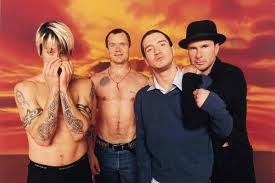
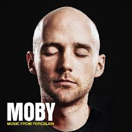
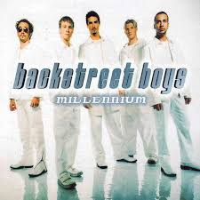
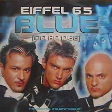
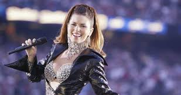

El culpable de que tengas estas referencias tan presentes es un canal de música que hoy se ha convertido en una plataforma mediática que poco tiene que ver con su época de gloria. Hablamos de MTV, un canal dedicado a la música que comenzó a ganar tanta popularidad que se convirtió en un referente cultural, social y hasta político que se caracterizaba por ser irónico e irreverente. De este modo se volvió el referente obligado de todo melómano interesado en las tendencias
Lo cierto es que fue siempre incluyente y así como sonaban clásicos como Madonna, también había novedades al estilo Justin Timberlake o Britney Spears; es por ello que casi cualquier niño de los noventa recuerda —o al menos eso intenta— con cierto aire de añoranza en el corazón lo que veía a través de la pantalla y cómo es que fue adoptando algunas costumbres y música sin estar del todo consciente de ello. Por esto, si conoces a la perfección los siguientes 20 temas que ahora son básicos en la vida, podrás decir que en verdad viste MTV.
"Californication"
Red Hot Chili Peppers
Desnudos + el bajo de Flea + videojuegos
La escuchas en cada fiesta y sólo cantas «Californicatioooon», pero probablemnte, te recuerda a los primeros pasos que diste en el mundo del rock.

"Porcelain"
Moby
Talento + innovación + misterios alrededor de Moby
Una mezcla de estilos musicales hacen de esta canción la ideal para cocinar o conversar con alguien de manera agradable.

"I Want It That Way"
Backstreet Boys
Pantalones holgados + cabelleras rubias + galanes
Con esta balada los Backstreet Boys se ganaron el corazón de las chicas, además es ideal para bailarla con tu pareja aun en la actualidad.

"Blue"
Eiffel 65
Saltos por todo el lugar + azul + Da Ba Bee (x 15 o más)
El one hit wonder que hizo bailar a todo el mundo en los antros sigue siendo indispensable en lugares nocturnos y bares. Si no te dan ganas de bailar, algo anda mal.

"Man I Feel Like a Woman"
Shania Twain
Mujer empoderada + hombres en transparencias + baile sensua
Shania Twain se convirtió en la reina del stiptease con esta canción, que aunque habla de la fuerza de una mujer, es sinónimo de bailes sexis y deseos sexuales.
